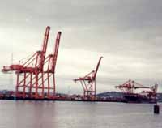
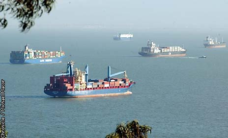
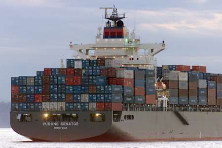

PMA Management Myths, ILWU Union Facts
Background:
The Shipping bosses of the Pacific Maritime Association. aided by their lap dogs in the corporate media have been spreading viscious lies about working conditions for ILWU union members. Management has put out their "spin" on the lockout of 10,500 dockworkers in the International Longshore and Warehouse Union (ILWU). What are the real facts?
Management Myth #1: The Pacific Maritime Association (PMA) claims that the union is refusing to accept new technology that has been adopted 20 years ago everywhere else.
The facts: The ILWU has agreed to the new technology, even though this would lead to the elimination of at least 600 union jobs. All the union asked in return is that the ILWU retain the right to organize the new jobs as they are created.
Management Myth #2: Every one of the clerks on the job will be guaranteed in writing of another job when they are displaced from their current job. The union is being bullheaded in refusing to accept this.
The facts: - Offering to find new jobs for displaced clerks simply dodges the issue. What management won't say is that the new nonunion jobs created through the new technology will be used to outsource the work of unionized workers. For example, the technology can be used to create a logistics system that can link a factory floor in the Far East with an inventory system used by a retail chain or a manufacturing plant in the U.S. to support "just-in-time" delivery of inventory. Over time this would give management the ability to move much of the ILWU 's work into large distribution centers far inland - and away from the ILWU and unions in general. That's why the West Coast Waterfront Coalition - which includes huge importers like the Gap, Target and Payless - is working closely with the PMA in pushing these anti-union demands.
If this sounds far fetched, consider the experience of the Teamsters union as the result of deregulation in the trucking industry. In the 1970s, the Teamsters' National Master Freight Agreement covered some 500,000 workers. Today it's just 85,000. The main reason is that unionized companies like Consolidated Freightways used deregulation to move their prize assets into nonunion companies like Con-Way. Consolidated Freightways went bankrupt and liquidated on Labor Day, and 15,500 Teamsters lost their jobs. But Con-Way and other companies spun off from Consolidated Freightways are today highly profitable, technologically advanced providers of freight delivery and sophisticated logistics systems. And they are nonunion.
You can see the same trend of outsourcing decently paid union jobs to low-wage, nonunion suppliers in the auto industry and in aerospace at Boeing. It's one of the main tactics that Corporate America has used to drive down union membership and strength.
And this isn't the first time that dockworkers have faced this kind of assault by management worldwide. In recent years we've seen it in Liverpool, England; Rotterdam in Holland; in Australia; and in Charleston, South Carolina.
Management Myth #3: The ILWU really wants to retain control of jobs and the ports because they are simply stuck in the past and unwilling to do what's necessary to raise their productivity.
 The facts: By any measure, ILWU dockworkers - and longshore workers in any port - are some of the most productive workers in the world. These workers' ability to load and unload ships rapidly and efficiently is the reason why shippers have massively increased imports through West Coast ports.
ILWU members handle goods worth $300 billion every year - equivalent to one third of the entire Gross Domestic Product of the United States. If the ILWU were really so inefficient, would the world's shipping lines and importers have made West Coast ports the economic lifeblood that the have become?
Management myth #4: ILWU members are overpaid, making between $80,000 to $157,00 per year.
The facts: Lett 's break it down. The New York Times reported - using management's figures - that 6,463 longshore workers earn $82,895 per year after working 2,006 hours per year, based on a schedule of a 40-hour workweek, 52 weeks per year. Those hours are already some of the longest in the country - well above national the average of 1,978 per year. Management reports that 1,583 clerks are paid $118,844 per year, and they work 2,662 hours per year. They report that 616 walking boss/foremen are paid $157,352 per year - but somehow forget to say that they work on average 3,130 hours per year-more than 30 percent higher than the national average.
If these workers are paid well, it's because they worked long and hard to earn it - taking time away from their families, their friends, their communities to keep these ports working, 24 hours a day, 7 days a week.
And given the enormous profits made by both shippers and importers on the goods ILWU members handle, just who is complaining that dock-workers are paid to much? And at a time when CEOs across Corporate America have been caught looting their companies for tens or even hundreds of millions of dollars each while workers' pensions plans lose billions, it takes a lot of nerve for these employers to whine about "overpaid" workers. After all, we know now that former Tyco CEO Dennis Kozlowski spent $15,000 for an umbrella stand in the shape of a dog, $445 for a pin-cushion, and $2,200 for a trash basket.
ILWU members are proud of the wages and conditions that they've achieved. Many have sacrificed their lives - not just in the great waterfront strike of 1934 that founded the union, but in just this year alone, five workers have been killed on the docks. A miscalculation in handling a container or operating a crane can cripple or kill someone on the docks in a matter of seconds.
What's more, the ILWU and unions across the U.S. offer an inspiration to working people to get organized and stand up for their rights collectively. According to U.S. Census Bureau statistics, the proportion of Americans in poverty rose significantly last year, for the first time in eight years.
Today, 32.9 million Americans are impoverished --11.7 million of them are children. That's an overall increase of 1.3 million poor people since the year 2000. In addition, about 1.4 million more people were without health insurance last year, driving the total to 41.2 million people without coverage, or 14.6 percent of the population.
Corporate America likes to say that the workers who have succeeded in organizing themselves to fight to improve their conditions are paid too much. But what we should really be addressing is why working people in this country are working harder for less. We say that unions are the best way workers have to defend and advance their interests, and the ILWU and dockworkers around the world are proud to be part of that struggle.
This fight for justice on the docks is a fight for working people everywhere!
From a leaflet produced by the SF Bay Area Portworkers Solidarity Committee.


American Shipper Reports: Container Lines to tripple profits this year to $1.9 billion.
Hanjin will report higher profits, MOL, NYK reported record profits for the fiscal year ended March 2001.
NOL operating profit was $79million in 2001 - $349million in 2000. APL (subsidiary of NOL), cut costs by 6% ad increased productivity by 17% in 2001.
Cosco Pacific LTD (Hong Kong), subsidiary of China Ocean Shipping Co. had an increase in net profit of $154million for 2001.
A.P. Moller (owner of Maersk-Sealand) reported $684million profit in 2001 - an increase of 3.4% over 2000.
Hapag-Lloyd Container Line increased its profit $164 million - up by 17% over 2000. Container volume up 8% to 1.7 million TEUs with no increase in staff. Hapag-Lloyd includes cruise ships, liner shipping, forwarding and logistics. Hapag-Lloyd Group operating profit after interest rose by 20% to $265million in 2001. The Group's net profit rose 27% to $204 million. 61% of Group sales were from shipping.
OOCL (Orient Overseas) had after-tax profit of $60 million for 2001 - after gaining $112million in 2000.
CSX reported first quarter 2002 profit up %25 over 2000. For the full year 2000, net income was $293million- was $186million in 2000.
Matson Co. (part of Alexander & Baldwin) reported first quarter 2002 profit of $2.5million - $20million in 2001.
From a leaflet produced by the SF Bay Area Portworkers Solidarity Committee.
